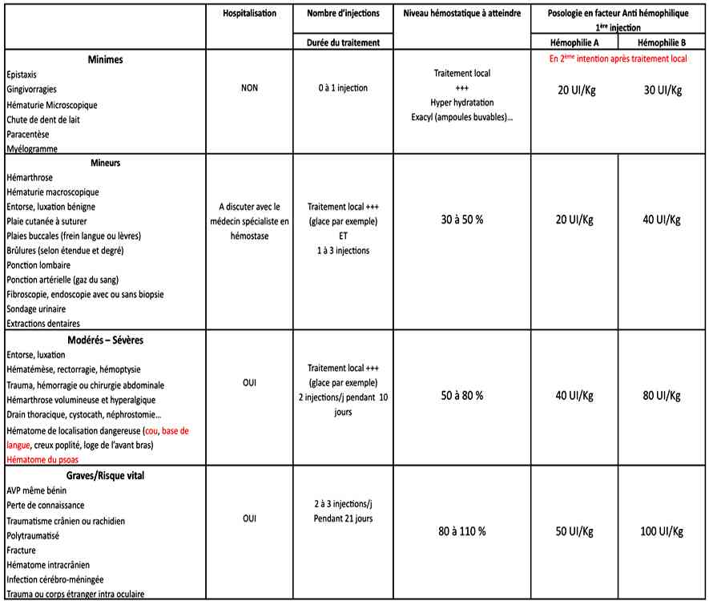

Bienvenue Sur Medical Education
Hémophilie
Spécialité : hematologie / pédiatrie /
Points importants
-
Maladie génétique récessive liée à une mutation sur le chromosome X (femmes porteuses exceptionnellement atteintes, hommes atteints)
-
Déficit en facteur VIII (hémophilie A 80% des hémophilies) ou en facteur IX (hémophilie B)
-
La sévérité est liée au taux de facteur anti-hémophilique dans le sang :
-
forme sévère : < 1%
-
forme modérée : entre 1 et 5%
-
forme atténuée : > 6%
-
Récupérer sans attendre le carnet d'hémophile : sévérité, facteur utilisé, présence ou non d'un inhibiteur, coordonnées du centre de référence
-
Une substitution sera effectuée avant tout examen invasif (GDS, PL, suture, endoscopie...)
Présentation clinique / CIMU
SIGNES FONCTIONNELS
- forme sévère : < 1%
- forme modérée : entre 1 et 5%
- forme atténuée : > 6%
Présentation clinique / CIMU
SIGNES FONCTIONNELS
Généraux
- Hémorragies spontanées ou pour un traumatisme minime
Spécifiques
- Hémarthroses (70% des cas) responsable de destructions articulaires
-
Hématomes (25%) de localisation potentiellement dangereuse :
- plancher buccal (asphyxie)
- rétro-orbitaire (cécité)
- paravertébral (paraplégie)
- intracrânien (engagement)
- Hémorragies viscérales
CONTEXTE
Terrain
- Hémophilie connue (récupérer la carte ou le carnet d'hémophile contenant des informations précieuses)
- Mais découverte fréquente lors d'une extraction dentaire ou d'un bilan pré-opératoire (formes mineures ou modérées)
Traitement usuel
- Nom du facteur utilisé habituellement mentionné sur la carnet d'hémophile
- Chercher à savoir la présence ou non d'un inhibiteur (anticorps anti facteur empêchant l'utilisation traditionnelle des perfusions de facteurs)
Risque hémorragique classé en
-
Minime :
- épistaxis
- gingivorragies
- paracentèse...
-
Mineur :
- hémarthrose
- entorse
- plaie à suturer
- ponction artérielle
- sondage urinaire
- extraction dentaire...
-
Modéré :
- luxation
- hématémèse, rectorragie
- hémarthrose volumineuse
- hématome de localisation dangereuse (psoas, cou, plancher buccal, creux poplité, loge de l'avant bras...)
-
Sévère :
- AVP, TC, PC
- traumatisme rachidien
- fracture
- hématome intracrânien
- corps étranger intra-oculaire
- les convulsions hyperthermiques, les méningites, la toxoplasmose et autres infections cérébro-méningées sont à risque hémorragique
EXAMEN CLINIQUE
- Complet
- Attention aux zones dangereuses (neurologique, plancher buccal, creux poplité...)
- Dans tous les cas, on évitera de mobiliser une articulation douloureuse
CIMU
- Tri 2 à 4
Signes paracliniques
BIOLOGIQUE
-
Le traitement prime sur les examens paracliniques quels qu'ils soient : la substitution sera faite avant tout examen complémentaire ou geste invasif (suture, PL, GDS, endoscopie...)
-
Eléments négatifs :
-
numération des plaquettes, temps de saignement et temps de Quick sont normaux
-
Eléments positifs :
-
allongement du TCA (souvent 2 ou 3T)
-
activité des facteurs coagulants VIII ou IX effondrée
-
ce dosage permet de définir la sévérité :
-
taux < 1% : H. sévère
-
taux de 1 à 5 % : H. modérée
-
taux > 6% : H. atténuée
-
Toujours prélever le bilan de coagulation sur le bras opposé de celui où est administré le facteur antihémophilique et en ponction directe
-
Prélever systématiquement : 2 tubes citratés pour la recherche des anticorps anti facteur (VIII et IX) et numération formule plaquettaire :
-
si syndrome hémorragique grave : prélever en plus : groupage sanguin et anticorps anti-érythrocytaire
-
en l'absence de carnet ou de carte d'hémophile : 2 tubes citratés pour TP, TCA, fibrinogène + une numération formule plaquettaire, groupage sanguin, anticorps anti-érythrocytaire et si possible un temps d'occlusion plaquettaire (plus fiable que le temps de saignement)
IMAGERIE
-
Radiographies conventionnelles en fonction du point d'appel, complétées d'une IRM ou d'une TDM si nécessaire
Diagnostic différentiel
-
Autres troubles de la coagulation :
-
maladie de Von Willebrand
-
déficit en autres facteurs de la coagulation
-
défauts d'agrégation plaquettaire...
-
Le dosage des facteurs de la coagulation et du fonctionnement des plaquettes font le diagnostic, mais les patients connaissent leur maladie (lorsqu'ils sont conscients) et sont tous porteurs d'une carte ou d'un carnet d'hémophile
Traitement
TRAITEMENT PREHOSPITALIER/INTRAHOSPITALIER
- numération des plaquettes, temps de saignement et temps de Quick sont normaux
- allongement du TCA (souvent 2 ou 3T)
- activité des facteurs coagulants VIII ou IX effondrée
-
ce dosage permet de définir la sévérité :
- taux < 1% : H. sévère
- taux de 1 à 5 % : H. modérée
- taux > 6% : H. atténuée
- si syndrome hémorragique grave : prélever en plus : groupage sanguin et anticorps anti-érythrocytaire
- en l'absence de carnet ou de carte d'hémophile : 2 tubes citratés pour TP, TCA, fibrinogène + une numération formule plaquettaire, groupage sanguin, anticorps anti-érythrocytaire et si possible un temps d'occlusion plaquettaire (plus fiable que le temps de saignement)
Diagnostic différentiel
-
Autres troubles de la coagulation :
- maladie de Von Willebrand
- déficit en autres facteurs de la coagulation
- défauts d'agrégation plaquettaire...
- Le dosage des facteurs de la coagulation et du fonctionnement des plaquettes font le diagnostic, mais les patients connaissent leur maladie (lorsqu'ils sont conscients) et sont tous porteurs d'une carte ou d'un carnet d'hémophile
Traitement
TRAITEMENT PREHOSPITALIER/INTRAHOSPITALIER
Stabilisation initiale
- Prise en charge standard de l'hémorragie et traitement d'un éventuel état de choc hémorragique
- L'urgence est à la substitution : administrer le concentré de facteur VIII et IX disponible sans attendre les résultats biologiques
 _254 Tableau Substitution en fonction du risque
- Privilégier le produit habituellement utilisé par le patient et l'origine recombinante si possible (surtout si première substitution) mais ne jamais attendre pour substituer : utiliser le produit disponible
-
Mieux vaut substituer en excès que prendre du retard :
- dans ce cas, seul le solvant présent dans le kit doit être utilisé (Ringer et HEA interdits)
- ne jamais transférer les facteurs dans une poche plastique ni secouer les flacons (les bulles détruisent le produit)
- tout flacon entamé sera utilisé sans délai
- Il n'y a pas de surdosage
- Ne jamais mélanger le facteur avec d'autres médicaments sur la voie veineuse. Utiliser les aiguilles de transfert prévues
- Faire dès que possible prévenir le pharmacien de l'établissement receveur et le médecin d'astreinte en hémostase
- Un traitement local (immobilisation et glace si possible) et un traitement antalgique approprié seront systématiquement proposés
- Les AINS et l'aspirine, les voies veineuses centrales, les injections intra musculaires, les contentions circulaires et les ponctions autre que veineuses sont contre-indiqués (sauf parfois après substitution)
- On réalisera une compression systématique des points de ponction (10 minutes et pansement compressif)
Suivi du traitement
- Le nombre d'injections, le niveau hémostatique à atteindre et la posologie dépendront du poids du patient, du taux de facteur initial et du risque hémorragique. Les injections suivantes seront adaptées au taux réel obtenu
- La durée du traitement et sa périodicité dépendront de la durée de vie du facteur injecté
- L'avis du médecin référent, pris précocement reste indispensable
MEDICAMENTS
- Contacter systématiquement le médecin du centre de référence ou à défaut l'hématologue de garde pour avis
- Injection IVD 2mL/min sans dilution dans un pochon
- Le taux réel de récupération peut être précisé sur le carnet d'hémophile si celui-ci a déjà été traité et tient compte de la variabilité individuelle
- Noter sur le carnet le type de facteur utilisé, la quantité et le numéro du lot (traçabilité)
Surveillance
CLINIQUE
-
Signes généraux d'hypovolémie et de tolérance à l'hémorragie (FC, PA, signes de choc...)
-
Signes spécifiques :
-
neurologiques (Glasgow, pupilles, vision, déficit sensitivo-moteur soit d'origine central, médullaire ou périphérique (syndrome des loges)...)
-
respiratoires (dyspnée, cyanose sur un hématome du cou ou du plancher buccal)
-
Recherche d'une hémorragie extériorisée
-
Se méfier d'une hémorragie interne de diagnostic difficile (hématome du psoas...)
-
Réaction allergique au facteur injecté, le plus souvent peu sévère : antihistaminique per os et poursuite de la perfusion, si choc anaphylactique : arrêt de la perfusion
PARACLINIQUE
-
Selon les recommandations du médecin référent
Devenir / orientation
CRITERES D'ADMISSION
-
L'hospitalisation sera systématique sauf accident hémorragique spontané à risque minime
-
En cas de doute, demander l'avis du médecin référent (mentionné sur le carnet d'hémophile)
CRITERES DE SORTIE
-
La sortie se fera en accord avec le médecin référent
CAS PARTICULIERS
-
Hémophilie avec inhibiteur (anticoagulants circulants: ils neutralisent l'activité des facteurs VIII et IX utilisés, nécessité de produits spécifiques) :
-
le taux d'inhibiteur sera toujours titré, la prise en charge dépendra de son taux (± 5 unités Bethesda)
-
avis systématique du médecin référent (adjonction ou remplacement de Novoseven® 90 à 120 µg/kg IVL sur 10 min ou Feiba® 80 UI/Kg IVD sur 30 min)
-
Hémophilie A mineure :
-
injection de Minirin® (desmopressine) qui libère les réserves de l'organisme en facteur VIII à la posologie de 0,3 µg/kg dilués dans 50 mL de NaCl 0,9% IV sur 30 min ou Octrim® (spray) 1 à 2 pulvérisations nasales selon le poids
Bibliographie
-
Orphanet
-
Recommandations de l'HAS
-
Les maladies orphelines aux urgences Congrès de Montchanin Juin 2007
- neurologiques (Glasgow, pupilles, vision, déficit sensitivo-moteur soit d'origine central, médullaire ou périphérique (syndrome des loges)...)
- respiratoires (dyspnée, cyanose sur un hématome du cou ou du plancher buccal)
Devenir / orientation
CRITERES D'ADMISSION
- L'hospitalisation sera systématique sauf accident hémorragique spontané à risque minime
- En cas de doute, demander l'avis du médecin référent (mentionné sur le carnet d'hémophile)
CRITERES DE SORTIE
- La sortie se fera en accord avec le médecin référent
CAS PARTICULIERS
-
Hémophilie avec inhibiteur (anticoagulants circulants: ils neutralisent l'activité des facteurs VIII et IX utilisés, nécessité de produits spécifiques) :
- le taux d'inhibiteur sera toujours titré, la prise en charge dépendra de son taux (± 5 unités Bethesda)
- avis systématique du médecin référent (adjonction ou remplacement de Novoseven® 90 à 120 µg/kg IVL sur 10 min ou Feiba® 80 UI/Kg IVD sur 30 min)
-
Hémophilie A mineure :
- injection de Minirin® (desmopressine) qui libère les réserves de l'organisme en facteur VIII à la posologie de 0,3 µg/kg dilués dans 50 mL de NaCl 0,9% IV sur 30 min ou Octrim® (spray) 1 à 2 pulvérisations nasales selon le poids
Bibliographie
-
Orphanet
-
Recommandations de l'HAS
-
Les maladies orphelines aux urgences Congrès de Montchanin Juin 2007
Auteur(s) : Gaële COMTE